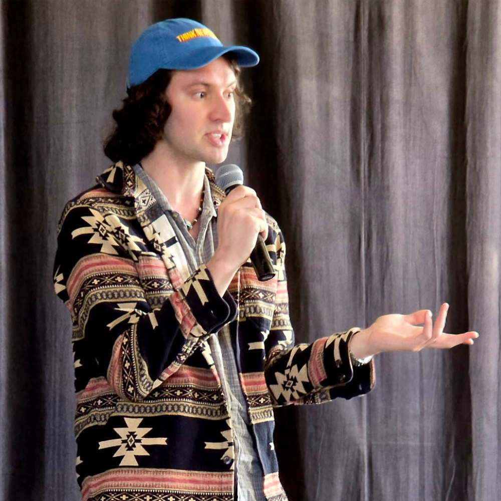
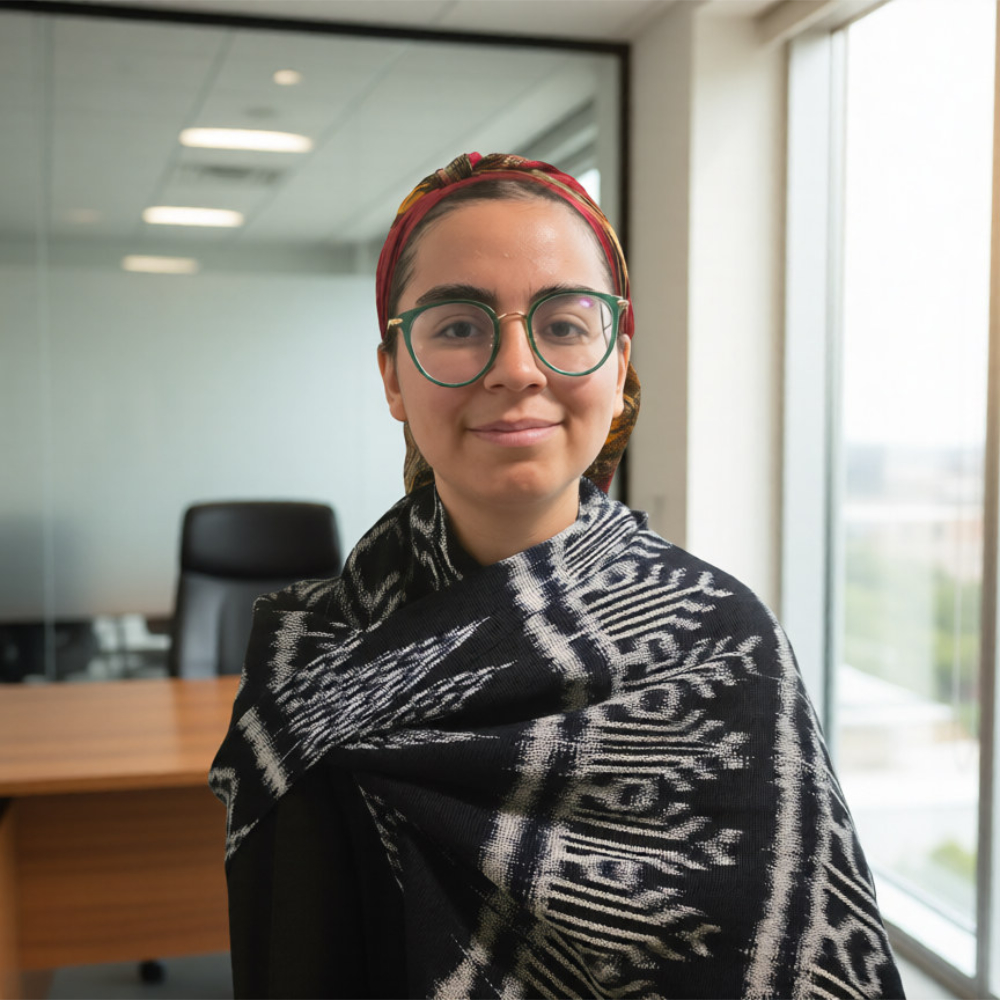
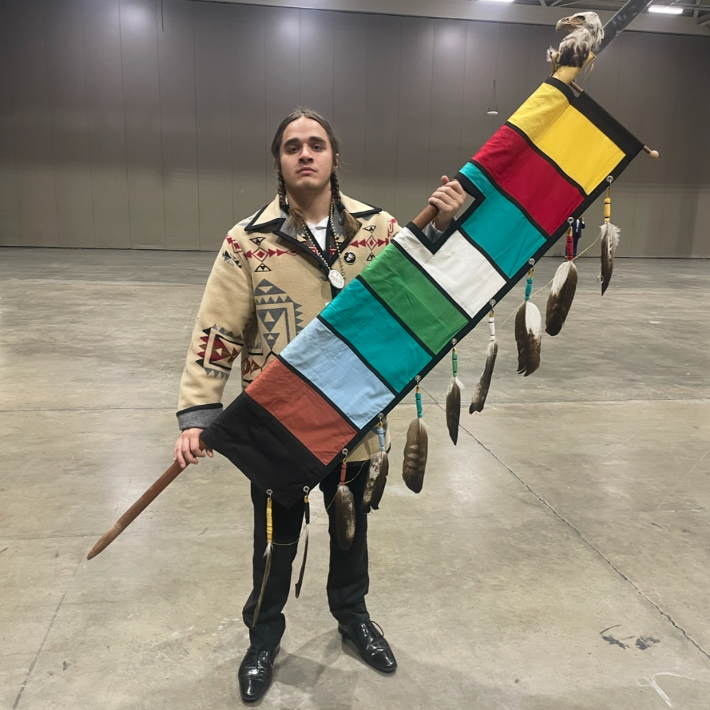

Nanola Recording is building Santa Fe's first free recording studio for youth.
Santa Fe has one of the highest concentrations of Native artists anywhere. Music is the exception, with little contemporary programming and no widely recognized Native American music stars to show for it. Cultural power comes from influence: shaping culture instead of just appearing in it. Right now, Native communities mostly don't have that.
Professional recording should be accessible to every young person with something to say.
Professional recording equipment, training, and studio time available at no cost. The barriers to creating music should be talent and dedication, not money.
Young people shape the programming, the priorities, and the space itself. Nanola is somewhere to hang out that isn't school, home, or have cost to enter.
Local musicians, Elders, and educators work alongside youth, connecting technical skills with cultural knowledge, confidence, and community.
A foundation built on what youth actually want, getting voices recorded for the first time.
The support structure that turns first recordings into real artistic growth.
Native youth as creators of contemporary culture, on their own terms.

Chickasaw Nation. Government, policy, and community organizing.
Cole Washburn (Chickasaw Nation) has experience working at every level of government, working in tribal elections, the Chicago Mayor's Office, the New Mexico State Legislature, and Representative Sharice Davids' office on Capitol Hill. He specializes in community outreach, working with the Democratic Party and the League of Women Voters to register new voters. After graduating from the University of Chicago, Cole moved to Santa Fe to live in the center of the Native American art community. He has worked in law, government, sustainable finance, and policy advocacy.

Grant writer and community organizer focused on youth-centered initiatives.
Mathew Paul (Guatemalan Maya K'iche/Jewish) is a community organizer and grant writer with more than five years of experience advancing youth-centered initiatives across New Mexico, Massachusetts, Guatemala, and Mexico. His work spans policy research, grant development, and direct outreach. Through the Youth Council of Cherán, Asamblea de Mujeres Michoacanas (AMM), Food Not Bombs Boston, and other grassroots organizations, he has developed cultural programming and secured funding while advancing his belief that lasting youth empowerment depends on accessible cultural infrastructure where young people can create, lead, and strengthen their communities.
Classically trained luthier and multi-instrumentalist.
Pablo Diaz-Granados (Colombian) graduated with a philosophy degree from the University of Chicago before training in Italy as a classical luthier. Before making violins, he spent years crafting guitars in Nashville and created a nonprofit in high school to supply free guitars to disadvantaged Latino youth. Pablo plays piano, guitar, and violin, specializing in classical music and power metal. He believes every child should learn to play an instrument.

Tunica-Biloxi Tribe musician and civil rights advocate.
Luke Velasquez (Tunica-Biloxi Tribe of Louisiana), more widely known as Nokushi Meli, is a Native American civil rights activist and rapper. He has worked with his tribe to preserve their cultural heritage by learning their traditional language and training in Tunica song and dance, using that knowledge to bring his culture into new genres and mediums. Luke graduated from Washington University in St. Louis with a degree in social work and has represented his tribe in local, state, and national politics.
Nanola Recording is still being built, and we'd love to hear from you. Whether you have space, expertise, funding, or just want to know when we open our doors, we want to hear from you!
We're looking for founding gifts, grant partnerships, and in-kind contributions of equipment or space.
We need workshop leaders, musical mentors, and hands-on expertise, and we're looking to build direct partnerships with Native organizations.
This is being built for you and with you. Tell us what you want to create, and help shape what Nanola becomes.
Reach us at
team@